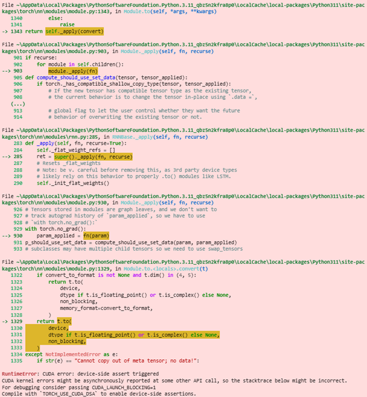

A machine learning project that has an LLM fully generate a FeedForward Neural Network
Why choose this?
I chose to implement an RNN with LSTM architecture for music genre classification to explore sequential data processing in audio signals. The GTZAN dataset provided a well-structured collection of audio files across multiple genres, making it ideal for this learning project.
The GTZAN dataset was used, containing 1,000 audio tracks across 10 genres (blues, classical, country, etc.), each 30 seconds long.
Key preprocessing steps:
The development process presented several technical challenges:
Problem: Initial attempts resulted in a runtime error: "input.size(-1) must be equal to input_size. Expected 128, got 1292"
Cause: The Mel spectrogram from Librosa returns shape (n_mels, time_steps) but the RNN expected (time_steps, n_features)
Solution: Transposed the spectrogram matrix before tensor conversion
mel_spec_db = librosa.power_to_db(mel_spec, ref=np.max).TProblem: Function return value mismatch when modifying feature extraction
Cause: Changed function to return only Mel spectrogram but kept old unpacking code
Solution: Standardized feature extraction to consistently return transposed Mel spectrograms
Problem: Slow training times on CPU
Solution: Implemented CUDA support after verifying GPU availability:
device = torch.device('cuda' if torch.cuda.is_available() else 'cpu')model.to(device)Problem:
When the app is ran, the following error keeps coming up, See attached image below No solution could be found:
A whole day was spent on login, testing new code, uninstalling nd reinstalling imports and python. However a solution could not be found for this.This project was implemented using the following tools: